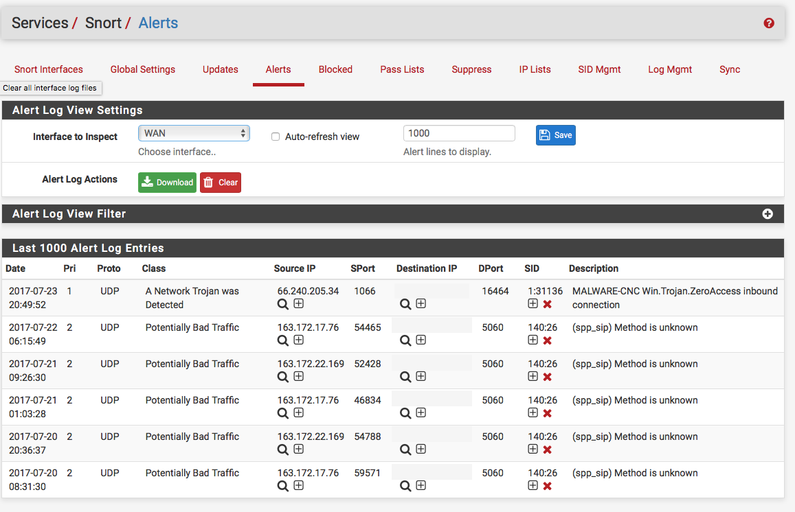

PFsense (Pare-feu & IDS/IPS)
La pièce maîtresse du laboratoire, PFsense gère le routage, le filtrage de paquets et héberge Snort pour l'inspection approfondie du trafic réseau en temps réel.
Plongez au cœur de l'environnement de cybersécurité avancé, où OPFsense orchestre le flux réseau, Snort détecte les menaces en temps réel et Kali Linux simule des attaques sophistiquées. Ce laboratoire est une plateforme robuste pour l'expérimentation des tactiques offensive et défensive, offrant une compréhension approfondie de la sécurité périmétrique et de la réponse aux incidents.
![[Interface PFsense montrant le Dashbord PFsens et la configuration Snort]](assets/img/Snort/pfsens dashbord.png)
Ce projet est une véritable cyber range personnelle, conçue pour explorer en profondeur l'interaction complexe entre les systèmes de détection d'intrusions (IDS) / de prévention d'intrusions (IPS) et les techniques d'attaque modernes. L'intégration de Snort avec un pare-feu robuste comme PFsense permet de simuler des scénarios de sécurité réseau de niveau entreprise et d'affiner les capacités de réponse.
L'objectif est de comprendre non seulement comment les attaquants opèrent avec Kali Linux et ses outils spécialisés, mais surtout comment une infrastructure défensive (Snort sur PFsense) peut les identifier, les journaliser et les bloquer. Ce cycle continu de Red Team (attaque) et Blue Team (défense) permet de construire une expertise pratique inestimable en Threat Hunting, forensique réseau, et rédaction de règles de sécurité pertinentes.
Déployer un IDS/IPS efficace comme Snort sur un pare-feu hautement configurable tel que PFsense présente plusieurs défis : la gestion fine des règles pour minimiser les faux positifs, l'optimisation des performances sur des volumes de trafic élevés, et l'adaptation constante aux nouvelles techniques d'évasion et menaces émergentes. Il faut également garantir une visibilité complète sur le trafic chiffré et non chiffré.
Ce projet résout ces défis par une approche systémique. PFsense assure la segmentation réseau et la gestion du trafic, tandis que Snort effectue l'inspection approfondie des paquets. L'utilisation de Kali Linux pour la simulation d'attaques permet des tests itératifs et un affinement précis des règles IDS/IPS. Cela inclut l'analyse des logs, la corrélation d'événements et la réactivité face aux alertes en temps réel, forgeant une expertise en ingénierie des règles de sécurité.
Un plan en 4 jours pour simuler une attaque (Kali/Tor) contre une cible (Win11) et la détecter avec un IDS/IPS (pfSense/Snort) et un SIEM (ELK Stack).
Ce laboratoire est un projet personnel en constante évolution, conçu pour tester les dernières techniques d’attaque et de défense.
Machine Kali Linux utilisée pour simuler des attaques dans le laboratoire.
Pour simuler une menace réaliste (APT), l'attaquant ne peut pas conserver une IP statique. Au lieu d'un simple changement d'IP DHCP, ce projet utilise le réseau Tor via Proxychains. Cela permet à Kali de changer son adresse IP publique source pour chaque nouvelle tentative de connexion, rendant le blocage par IP simple (utilisé par l'IPS) difficile à maintenir.
Configuration de Tor et Proxychains sur Kali :
# 1. Mettre à jour et installer les paquets sudo apt update sudo apt install -y tor proxychains # 2. Configurer Proxychains pour utiliser Tor # (Le fichier /etc/proxychains4.conf doit avoir la ligne suivante à la fin) socks5 127.0.0.1 9050 # 3. Démarrer le service Tor sudo service tor start # 4. Vérifier le changement d'IP (l'IP affichée doit être différente) proxychains curl ifconfig.me # 5. Lancer une attaque (ex: scan Nmap) via Tor proxychains nmap -sT -Pn -n [IP_CIBLE_WIN11]
Règles Snort configurées pour détecter les signatures d'attaques (scans, bruteforce) provenant de Kali.

Alertes générées dans pfSense/Snort suite aux attaques simulées.
Maîtrise de la syntaxe avancée de Snort et Suricata, rédaction de règles sur mesure pour détecter des TTPs (Tactics, Techniques, and Procedures) complexes, et capacités de chasse aux menaces proactives.
Conception, déploiement et configuration de topologies réseau sécurisées avec **OPNsense**, segmentation réseau (VLANs), routage avancé et optimisation des flux pour la performance et la sécurité.
Capacité à interpréter les alertes IDS/IPS, à analyser profondément les captures de paquets (PCAP) avec Wireshark pour reconstituer les attaques, et à initier des actions de réponse rapides et efficaces.
Application pratique des principes de la défense active, notamment le renforcement des systèmes (system hardening), la gestion des vulnérabilités, et la mise en œuvre de politiques de sécurité robustes basées sur les retours des tests d'intrusion.
Mise en place de solutions de centralisation des logs (ex: Syslog, Splunk ou ELK Stack) pour une analyse corrélée des événements de sécurité, essentielle pour la détection proactive et la conformité.
Utilisation experte de Kali Linux pour reproduire des techniques d'attaque courantes et complexes (ex: exploits, reconnaissance passive/active, attaques de mots de passe), permettant de valider l'efficacité des défenses.